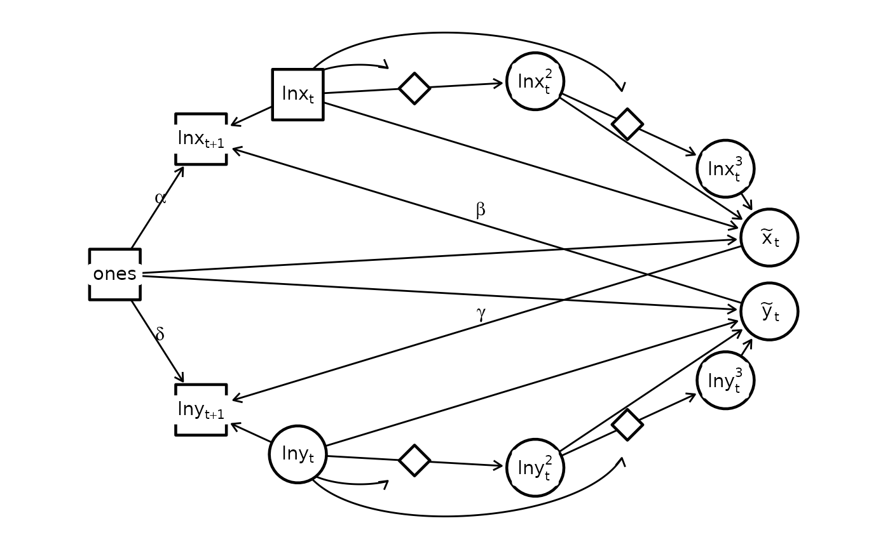

Nonlinearity
dsem can be specified to estimate some types of
nonlinearity. Here, we demonstrate an approximation to the exponential
function using Lotka-Volterra dynamics.
To show this, we predict sea surface temperature from Departure Bay based upon the Pacific Decadal Oscillation:
library(dsem)
dataset = c("hare_lynx", "paramesium_didinium" )[2]
# Load data
if( dataset == "paramesium_didinium" ){
data(paramesium_didinium)
orig_dat = data.frame(
X = paramesium_didinium[,'paramecium'] / 100,
Y = paramesium_didinium[,'didinium'] / 100
)
}
if( dataset == "hare_lynx" ){
data(hare_lynx)
orig_dat = data.frame( X = hare_lynx$hares / 10000, Y = hare_lynx$lynx / 10000 )
}
# Format
dat = full_dat = cbind(
logX = log(orig_dat$X), logY = log(orig_dat$Y),
X = NA, Y = NA,
logX1 = NA, logY1 = NA,
logX2 = NA, logY2 = NA,
logX3 = NA, logY3 = NA,
ones = 1
)
# Center variables for numerical stability
mean_j = colMeans( dat[,1:2], na.rm = TRUE )
dat[,1:2] = sweep( dat[,1:2], FUN = "-", MARGIN = 2, STATS = mean_j )We then define a MDSEM:
sem = "
# Main interactions
logX -> logX, 1, NA, 1
ones -> logX, 0, alpha
Y -> logX, 1, beta, -0.1
# Form X \approx exp(logX)
ones -> X, 0, NA, 1
logX -> logX1, 0, NA, 1
logX1 -> X, 0, NA, 1
logX1 -> logX2, 0, logX
logX2 -> X, 0, NA, 0.5
logX2 -> logX3, 0, logX
logX3 -> X, 0, NA, 0.166
# Variances
X <-> X, 0, NA, 0
logX <-> logX, 0, sd_logX
logX1 <-> logX1, 0, NA, 0
logX2 <-> logX2, 0, NA, 0
logX3 <-> logX3, 0, NA, 0
# Main interactions
logY -> logY, 1, NA, 1
X -> logY, 1, gamma
ones -> logY, 0, delta, -0.1
# Form Y \approx exp(logY)
ones -> Y, 0, NA, 1
logY -> logY1, 0, NA, 1
logY1 -> Y, 0, NA, 1
logY1 -> logY2, 0, logY
logY2 -> Y, 0, NA, 0.5
logY2 -> logY3, 0, logY
logY3 -> Y, 0, NA, 0.166
# Variances
Y <-> Y, 0, NA, 0
logY <-> logY, 0, sd_logY
logY1 <-> logY1, 0, NA, 0
logY2 <-> logY2, 0, NA, 0
logY3 <-> logY3, 0, NA, 0
# Dummy constant
ones <-> ones, 0, NA, 0.001
ones -> ones, 1, NA, 1
"We then fit this without estimating any mu
parameters:
fit = dsem(
tsdata = ts(dat),
sem = sem,
estimate_mu = vector(),
estimate_delta0 = FALSE,
control = dsem_control(
quiet = TRUE
)
)We can also visualize the estimated graph
library(igraph)
library(ggraph)
g = make_empty_graph(15)
V(g)$name = c("ones", "lnx[t+1]", "lnx", "z1", "lnx^2", "z2", "lnx^3", "x", "y", "lny^3", "z3", "lny^2", "z4", "lny", "lny[t+1]" )
V(g)$shape = c( "square", "circle", "diamond")[c(1,1,1,3,2,3,2,2,2,2,3,2,3,2,1)]
V(g)$label = c("ones", "lnx[t+1]", "lnx[t]", "", "lnx[t]^2", "", "lnx[t]^3", "tilde(x)[t]", "tilde(y)[t]", "lny[t]^3", "", "lny[t]^2", "", "lny[t]", "lny[t+1]" )
#
g <- add_edges(g, c("ones", "lnx[t+1]"), attr = list(label = "alpha", type = "solid", col = "black", curve = 0))
g <- add_edges(g, c("lnx", "lnx[t+1]"), attr = list(label = "", type = "solid", col = "black", curve = 0))
g <- add_edges(g, c("lnx", "lnx^2"), attr = list(label = "", type = "solid", col = "black", curve = 0))
g <- add_edges(g, c("lnx^2", "lnx^3"), attr = list(label = "", type = "solid", col = "black", curve = 0))
#
g <- add_edges(g, c("ones", "x"), attr = list(label = "", type = "solid", col = "black", curve = 0))
g <- add_edges(g, c("lnx", "x"), attr = list(label = "", type = "solid", col = "black", curve = 0))
g <- add_edges(g, c("lnx^2", "x"), attr = list(label = "", type = "solid", col = "black", curve = 0))
g <- add_edges(g, c("lnx^3", "x"), attr = list(label = "", type = "solid", col = "black", curve = 0))
g <- add_edges(g, c("x", "lny[t+1]"), attr = list(label = "gamma", type = "solid", col = "black", curve = 0))
#
g <- add_edges(g, c("lnx", "z1"), attr = list(label = "", type = "solid", col = "black", curve = 1))
g <- add_edges(g, c("lnx", "z2"), attr = list(label = "", type = "solid", col = "black", curve = 1))
#
g <- add_edges(g, c("ones", "lny[t+1]"), attr = list(label = "delta", type = "solid", col = "black", curve = 0))
g <- add_edges(g, c("lny", "lny[t+1]"), attr = list(label = "", type = "solid", col = "black", curve = 0))
g <- add_edges(g, c("lny", "lny^2"), attr = list(label = "", type = "solid", col = "black", curve = 0))
g <- add_edges(g, c("lny^2", "lny^3"), attr = list(label = "", type = "solid", col = "black", curve = 0))
#
g <- add_edges(g, c("ones", "y"), attr = list(label = "", type = "solid", col = "black", curve = 0))
g <- add_edges(g, c("lny", "y"), attr = list(label = "", type = "solid", col = "black", curve = 0))
g <- add_edges(g, c("lny^2", "y"), attr = list(label = "", type = "solid", col = "black", curve = 0))
g <- add_edges(g, c("lny^3", "y"), attr = list(label = "", type = "solid", col = "black", curve = 0))
g <- add_edges(g, c("y", "lnx[t+1]"), attr = list(label = "beta", type = "solid", col = "black", curve = 0))
#
g <- add_edges(g, c("lny", "z4"), attr = list(label = "", type = "solid", col = "black", curve = -1))
g <- add_edges(g, c("lny", "z3"), attr = list(label = "", type = "solid", col = "black", curve = -1))
pos = function(i){
rad = i/17*2*pi - 0.25*2*pi
return( c(x=sin(rad),y = cos(rad)) )
}
loc_nodes = t(sapply(c(0,2:14,15), pos))
# Manual fixes
loc_nodes[4,] = loc_nodes[4,] + c(0, -0.07)
loc_nodes[6,] = loc_nodes[6,] + c(-0.05, -0.05)
loc_nodes[11,] = loc_nodes[11,] + c(-0.05, 0.05)
loc_nodes[13,] = loc_nodes[13,] + c(0, 0.07)
layout = create_layout( g, loc_nodes[,c("x","y")] )
ggraph(layout) +
geom_edge_link2(
arrow = arrow(length = unit(2, "mm")),
end_cap = ggraph::circle(7, 'mm'),
start_cap = ggraph::circle(0, 'mm'),
aes( label = label, linetype = type, col = "black", filter = (curve==0) ), # , edge_width = ifelse(type == "dotted", 0.8, 0.8)
vjust = -0.2,
hjust = 0.4,
label_parse = TRUE
) +
geom_edge_arc(
arrow = arrow(length = unit(2, "mm")),
end_cap = ggraph::circle(7, 'mm'),
start_cap = ggraph::circle(0, 'mm'),
strength = 1,
aes( label = label, linetype = type, col = col, filter = (curve==1) ), # , edge_width = ifelse(type == "dotted", 0.8, 0.8)
vjust = -0.2,
hjust = 0.4,
label_parse = TRUE
) +
geom_edge_arc(
arrow = arrow(length = unit(2, "mm")),
end_cap = ggraph::circle(7, 'mm'),
start_cap = ggraph::circle(0, 'mm'),
strength = -1,
aes( label = label, linetype = type, col = col, filter = (curve==-1) ), # , edge_width = ifelse(type == "dotted", 0.8, 0.8)
vjust = -0.2,
hjust = 0.4,
label_parse = TRUE
) +
geom_node_point(
aes(shape = shape, size = ifelse(shape == "diamond",8,15) ), #
#size = 15,
stroke = 1.2,
color = "black",
fill = "white"
) +
geom_node_label(
fill = "white",
lwd = 0,
aes(label = label),
parse = TRUE
) +
theme(panel.background = element_rect(fill = NA, color = NA)) +
coord_cartesian( xlim = 1.2*c(-1, 1), ylim = 1.2*c(-1, 1) ) +
scale_shape_manual(values = c("circle" = 21, "square" = 22, "diamond" = 23), guide = "none") + # ?scale_shape
scale_edge_linetype_manual(values = c("solid" = "solid", "dotted" = "solid"), guide = "none") +
scale_edge_colour_manual(values = c("black" = "black", "grey" = "grey"), guide = "none") +
scale_size( range = c(6,15), guide = "none" )
Runtime for this vignette: 3.85 secs